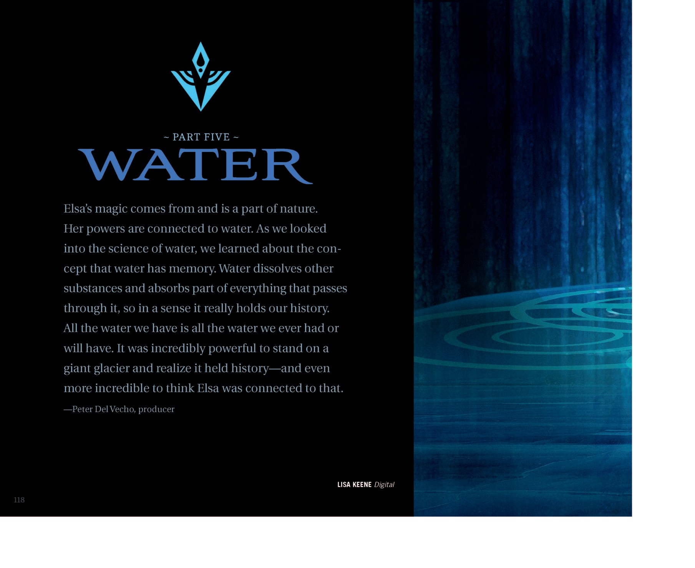
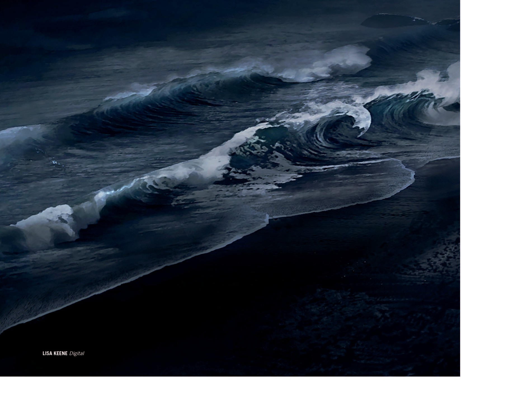
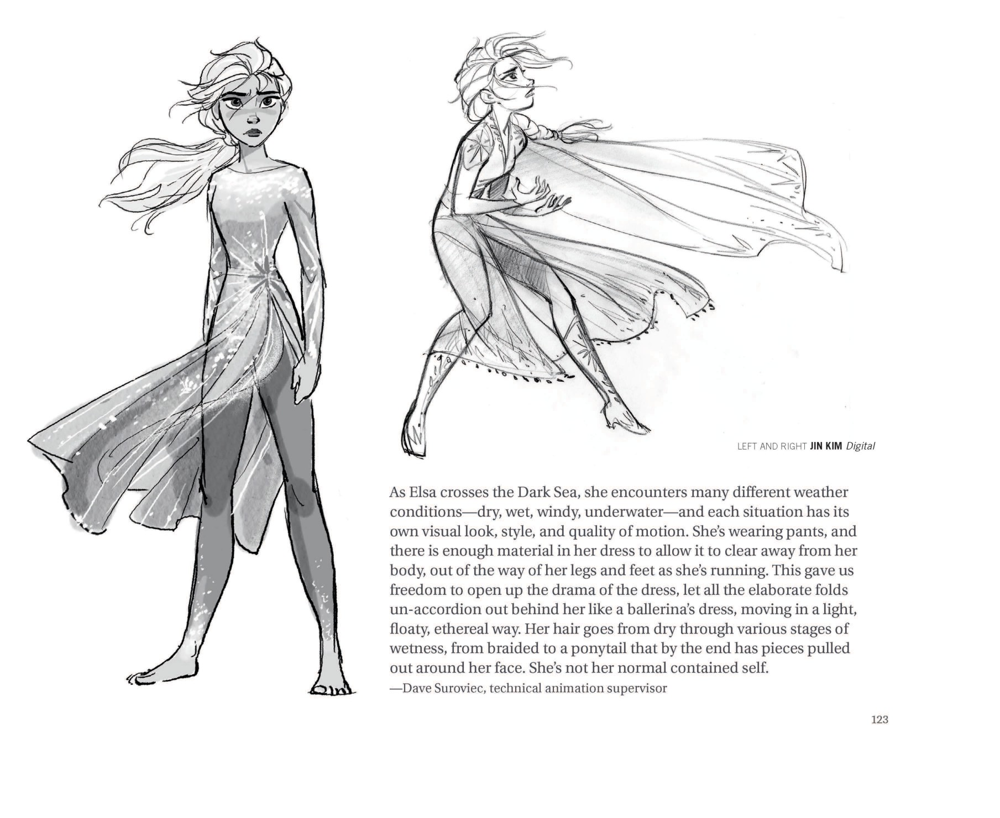
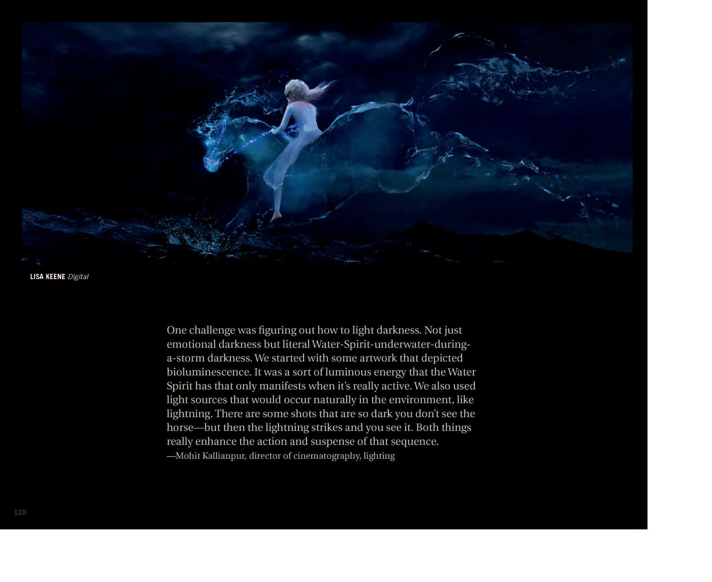
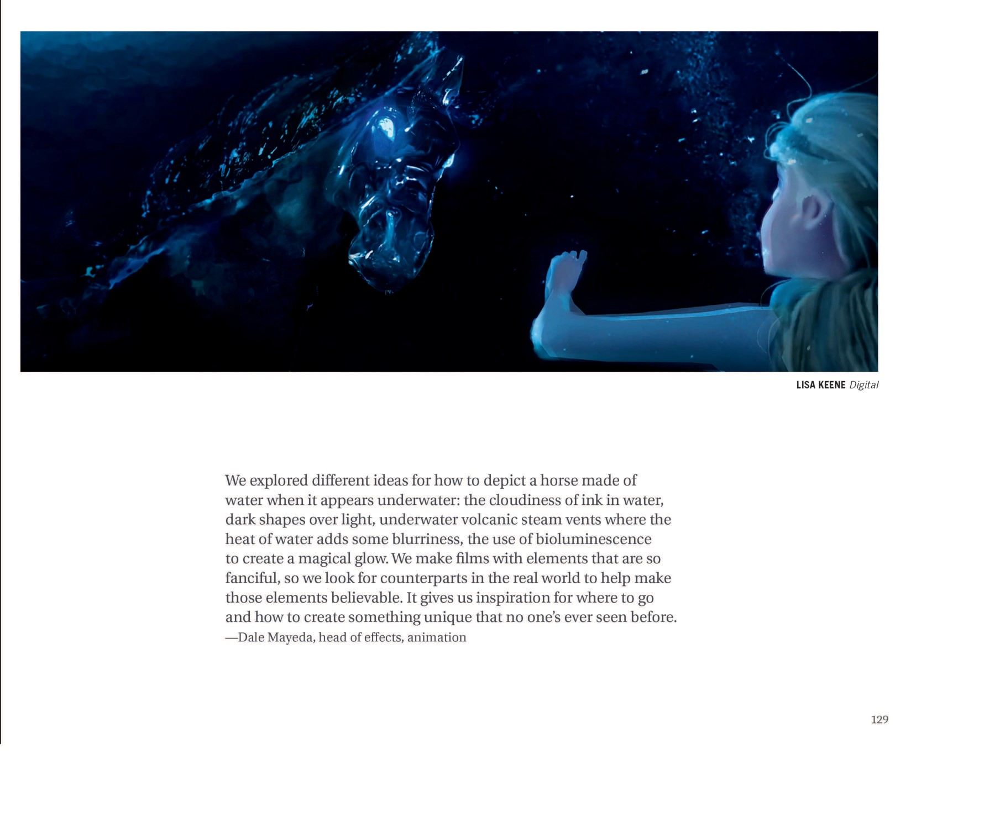

📖 设定集 · F2设定集
F2 图版 · 水之灵与暗海
F2 官方设定集图版 · p122–p133
5
本卷页数
🎨
设定集
中/英
双语
🖼️ F2 官方设定集 · 原书图版
F2 图版 · 水之灵与暗海
《The Art of Frozen II》（Jessica Julius, Chronicle Books 2019） p122–p133
11
图版
p122–p133
原书页码
原书
扫描原图
笔记
逐页图注
🌊 Part Five「Water」：「水有记忆」的章节开篇，Dark Sea 的艾莎服装与动作设计，以及水灵诺克的水上/水下视觉研究——既要像马又要像水的设计难题。
🌊 Part Five: Water · Dark Sea · Nokk（p122–p133）

Part Five WATER 章节扉页
"第五部分：水"章节扉页。引用说明：Elsa 的魔法源于自然、与水相连；研究水的科学时得知"水有记忆"——水溶解并吸收经过的一切，本质上承载着历史；站在冰川上意识到它承载历史、且 Elsa 与之相连，是极其震撼的。署名 Lisa Keene。（F2设定集原页）

Water 章节内（Nokk
Elsa 在水中唤醒/与 Nokk 交流的关键场景；Nokk 以纯水形态呈现，鬃毛如飞溅水花；周围水面同心圆象征水的"记忆"主题。（F2设定集原页）

章节待考（位于"Dark Sea"主题之前一页）
无正文段落，仅署名 Lisa Keene（数字绘）的 Dark Sea 海浪概念图，色调压抑，呈现 Elsa 将要面对的"黑色海洋"的视觉印象。（F2设定集原页）

Chapter 标题页 — "Dark Sea"
章节标题"Dark Sea（黑海）"；David Womersley（环境艺术总监）解释：Elsa 站在 Black Beach 上凝视 Dark Sea，因为她必须穿越它才能抵达 Ahtohallan。黑海滩灵感取自冰岛 Reynisfjara 黑沙滩；场景设在午夜，沙黑、海黑，只有闪电与超自然光源照明，设计极具挑战（F2设定集原页）

Dark Sea 子节 — Elsa 服装设计
Elsa 在 Dark Sea 段的两种造型——左侧的带冰斗篷全裙装（正面、强调垂坠的星光冰纱），右侧三视图的更贴身款（似水般的剪裁、冰蓝渐变、透明纱）。脚踝处注明"only on outer ankle only"裁口（"only"疑为印刷/OCR 重复）；右下角图示为"ankle embroidery detail（F2设定集原页）

Dark Sea 子节 — Elsa 动作设计
戴夫·苏罗维克（技术动画总监）解读：Elsa 横渡 Dark Sea 时经历干燥、潮湿、风、水下等多种气候，每种都有自己的视觉与运动质感。她穿着长裤，裙装被设计得在跑动时能自然从腿上、脚边摆开，让戏剧性布料像芭蕾舞裙一样在她身后轻飘。她的发型从辫子→马尾再到末端散乱碎发贴面，象征她"不再是平时那个被束缚的自己"。（F2设定集原页）

Water Spirit — 水下可见性
Lisa Keene（联合制作设计师）解释：水灵即使在水下也须看起来"由水构成"，腿成形又消失；每次水下移动都留有拖尾辉光确保轮廓可见。原本是纯蓝色，后被软化为"略偏紫的灰"，搭配灰蓝、灰绿；四肢透明，边缘有光之舞蹈；运动时光打在物体前缘会闪光——静态图中看不见，运动时大脑自动补完形状。（F2设定集原页）

Water Spirit — 静态形态简化
Steve Goldberg（视效总监）：早期测试在鬃毛和尾巴做了大量喷水（因为那是"高动作区"），但最终水流被简化成温和的小喷泉——表面运动极小、飞沫远少于初稿。画面展示了较"安静"状态的 Elsa 骑水灵造型，签名 Bill Schwab。（F2设定集原页）

Water Spirit — 水上 vs 水下视觉对比
Erin Ramos（特效动画总监）：水灵在陆地和水下视觉不同。陆上——效果集中在马的边缘，spindrift（飞沫）随风飘散，类似碎浪飞沫；水下——无 spindrift，效果在马体内，有"虹彩感"，像装满不同不透光色彩弹珠的玻璃弹珠。署名：左上为 Iker de los Mozos Anton（模型）与 Lisa （F2设定集原页）

Water Spirit — 黑暗中的打光
Mohit Kallianpur（摄影/灯光总监）：挑战在于"如何照亮黑暗"——不是情绪的黑暗，而是字面意义上的水灵在水下+风暴双重黑暗。先用生物发光（bioluminescence）的概念——水灵只在真正活跃时才显现的"发光能量"；同时用闪电等自然光源。某些镜头黑到看不见马，闪电一亮才看见——这种手法极大强化了该段的（F2设定集原页）

Water Spirit — 水下视觉灵感
Dale Mayeda（特效动画总监）：尝试用真实世界的视觉经验去表现"水下由水构成的马"——墨在水中扩散的朦胧感、深色压浅色、海底火山蒸汽口产生的热力模糊、生物发光的魔幻辉光。制作这些奇幻元素时要去现实找对应物，让其可信；这激发灵感去创造前所未见之物。（F2设定集原页）
💡 图注说明
本页全部图版为《The Art of Frozen II》（Jessica Julius, Chronicle Books 2019）原书扫描（原图复制，未压缩），图注（中文标题 + 要点首句）逐页取自官方设定集中文笔记，点击图片可查看原尺寸扫描。
📌 本页要点
你正在阅读《设定集》卷的「F2 图版 · 水之灵与暗海」。本页由电影正典、官方设定集与官方小说综合梳理，可作为该主题的速查入口；右侧目录可快速跳转到本页各小节。